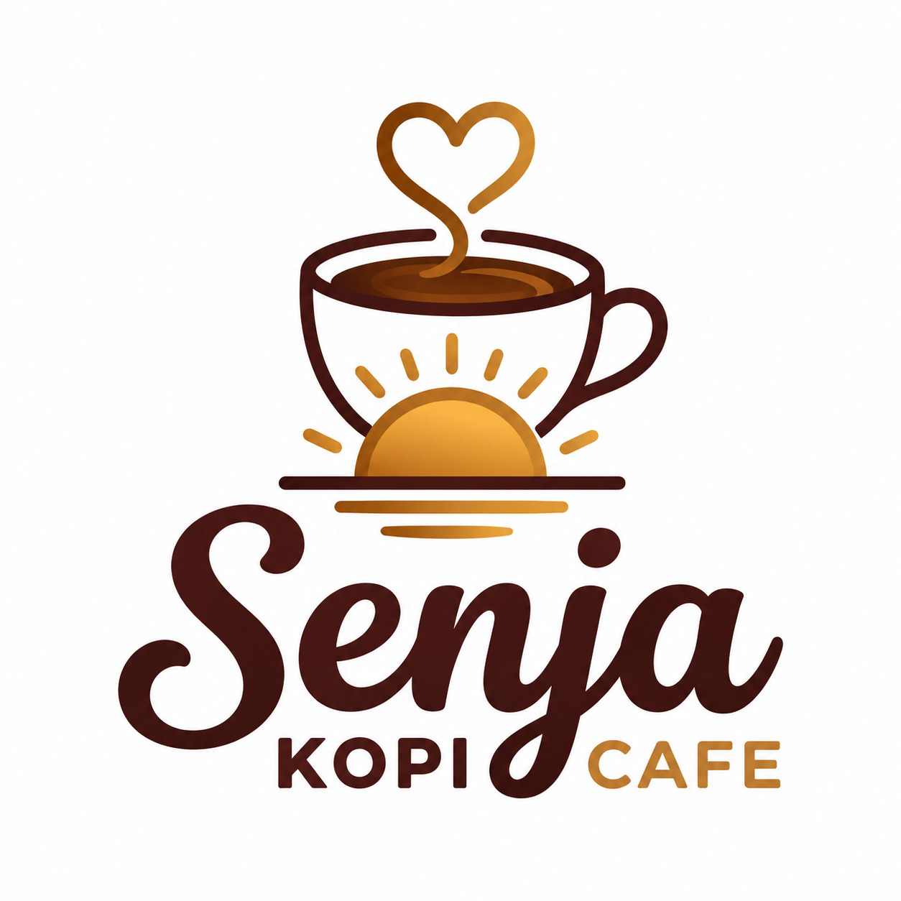

Cafe & Coffee
“Kami siap menemani harimu dengan secangkir kopi.”
| Hari | Jam Buka |
|---|---|
| Senin - Jumat |
09.00 - 22.00
Buka |
| Sabtu - Minggu |
10.00 - 24.00
Buka |
“Datang saat senja, pulang membawa cerita.”